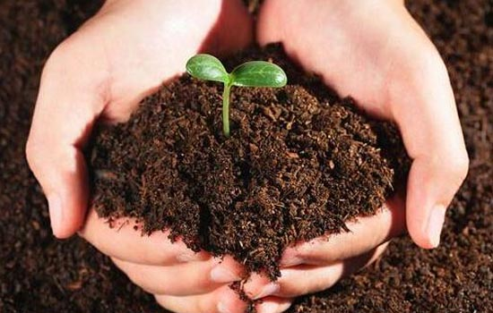

सेंद्रिय शेती विषयी माहिती

सेंद्रिय शेती
सेंद्रिय शेती म्हणजे सजीव पर्यावरणीय रचना आणि जीवनचक्रास समजून घेऊन व रसायनांचा वापर टाळून केलेली एकात्मिक शेती
पद्धती होय.
सिक्कीम सरकारने २०१५ पर्यंत संपूर्ण राज्य सेंद्रिय शेतीखाली आणण्याचे ध्येय ठरविले आहे. सेंद्रिय शेती सध्या
सुमारे ११० देशामध्ये केली जात असून तिचा हिस्सा वाढतो आहे.
सेंद्रिय अन्नाच्या बाजारपेठा – युनायटेड स्टेट्स, द. युरोपियन युनियन (जर्मनी, फ्रान्स, इटली, बेल्जियम, युनायटेड
किंगडम) आणि जपान या सेंद्रिय पद्धतीची शेती करून पिकविलेल्या अन्नधान्याच्या मुख्य बाजारपेठा आहेत. सेंद्रिय शेती
करून उत्पादनांची निर्मिती करणारे आशियातील प्रमुख देश आहेत, चीन, युक्रेन, भारत, इंडोनेशिया आणि इस्त्राईल.
सेंद्रिय बाजारपेठ स्थिर गतीने वाढत असताना त्यासंबधी सेंद्रिय प्रमाणीकरण (सर्टिफिकेशन) आणि नियमावली अधिकाधिक कठोर
आणि अनिवार्य होत आहे.
सर्वसाधारणप्रमाणे, सेंद्रिय अन्नाच्या उत्पादनाशी थेट संबध असलेल्या कोणत्याही व्यवसायाला, उदाहरणार्थ, बियाण्याचे
पुरवठादार, शेतकरी, अन्न प्रक्रियादार, रिटेलर्स आणि रेस्टोरन्टन्सला प्रमाणपत्र मिळू शकते.
प्रत्येक देशानुसार त्यासाठी असलेल्या आवश्यतेनुसार बदल होतो आणि सर्वसाधारणतः त्यामध्ये पिकविणे, साठविणे,
प्रक्रिया करणे, पॅकेजिंग करणे आणि वाहतूक करणे इत्यादी बाबतच्या उत्पादन मानकांचा समावेश असतो.त्याचे उद्देश
पुढीलप्रमाणे आहे.
सेंद्रिय शेतीची तत्त्वे
आरोग्याचे तत्त्व
हवा, माती, धान्याची रोपे, पशू, पक्षी, मनुष्यप्राणी व निसर्गचक्र यांचे आरोग्य वाढविणे हा सेंद्रिय शेतीचा उद्देश
आहे. कोणत्याही रासायनिक गोष्टी न वापरल्यामुळे हे आरोग्यास पोषक आहे.
पर्यावरणीय तत्त्व
सेंद्रिय शेती ही निसर्गाच्या जीवनचक्रावर अवलंबून व अनुरूप हवी. ती जीवसृष्टीला धरून चालणारी हवी. यामुळे कोणतेही
प्रदूषण होत नाही.
निष्पक्षतेचे तत्त्व
सेंद्रिय शेती ही निसर्गचक्रातील परस्परांच्या संबंधात कोणत्याही एका बाजूस कलणारी नसावी. निष्पक्षतेची खात्री
देणारी असावी.
संगोपनाचे तत्त्व
यात अंतर्भूत असलेल्या सर्व घटकांचे संगोपन सुयोग्यरीत्या व्हावयास हवे. परिणामी,या व पुढच्या पिढीतील सर्वांचे
आरोग्य व कल्याण योग्य रितीने राखले जाईल सेंद्रिय शेतीबाबत एक सरकारी संकेतस्थळ]
वैशिष्ट्ये
स्थानिक गोष्टींचा व पुनर्वापर करण्याजोग्या वस्तूंचा वापर
मातीचा आरोग्य स्तर कायम ठेवण्यास मदत.
पिके व आजुबाजूस असणाऱ्या वनस्पती यांच्यामधील पोषक तत्त्वांचा व सभोवतालच्याच सेंद्रिय पदार्थांचा पुनर्वापर.
निसर्गाचे संतुलन कायम राखण्यासाठी, अनैसर्गिक वस्तू, निसर्गाशी अनोळखी जीवांचा (कीटकनाशके, रासायनिक पदार्थ, जीएमओ
इत्यादी) उपयोग न करणे
उत्पादनात वैविध्य
शेतीवर अवलंबून असणार्या जीवांना नैसर्गिक जीवन जगण्याचा हक्क देते. पर्यावरण संरक्षणात महत्त्वाची भूमिका.
अन्न सुरक्षेची खात्री व जीवनमान उंचावण्यास मदत.
आर्थिक उत्पनात वाढ व खर्चात घट याद्वारे उत्तम आर्थिक नियोजन.
एकमेकाशी निगडित पद्धती
सेंद्रिय शेतीमध्ये पारंपरिक पद्धतीचा उपयोग केला जातो.
सेंद्रिय शेतीमध्ये पाळीव प्राण्यांचाही उपयोग केला जातो.
सेंद्रिय खतांचे प्रकार
वनस्पती व प्राणी यांच्या अवशेषापासून जे खत तयार होते त्याला सेंद्रिय खत म्हणतात. सेंद्रिय खतांमध्ये महत्त्वाची
खते म्हण्जे शेणखत, कंपोस्ट, हिरवळीची खते, गांडूळ खते, माश्यांचे खत, खाटिकखान्याचे खत, हाडांचे खत, तेलबियांची
पेंड इत्यादी.
शेणखत :
गाईम्हशींचे शेण, मूत्र, गोठ्यातील पालापाचोळा इत्यादी घटकांपासून तयार होणाऱ्या खताला शेणखत म्हणतात. त्यामध्ये
नत्र, स्फुरद व पालाश असते. शेणाचा महत्त्वाचा उपयोग बायोगॅसमध्ये ऊर्जा निर्मितीसाठी होतो आणि शिल्लक राहिलेले पातळ
शेण पिकांच्या वाढीसाठी पोषक अन्नद्रव्य म्हणून वापरता येते.
कंपोस्ट खत :-
शेतातील गवत, पिकांचे कापणीनंतर उरलेले अवशेष, भुसा, उसाचे पाचट, कापसाची धसकटे इ. सेंद्रिय पदार्थांचे
सूक्ष्मजीवजंतूंमुळे विघटन होऊन त्यातील कार्बन नत्राचे प्रमाण कमी होते व चांगला कुजलेला पदार्थ तयार होतो त्याला
कंपोस्ट म्हणतात. यामध्ये नत्र, स्फुरद आणि पालाश असते.
हिरवळीची खते :-
लवकर वाढणाऱ्या पिकांची निवड करून, त्यांची दाट पेरणी करून पीक फुलोऱ्यावर येण्याच्या आधी ते नांगराच्या सहाय्याने
जमिनीत गाडतात. त्यापासून जमिनीला नत्र मिळते, जमिनीचा पोत सुधारतो व ती सुपीक बनते. अशा खतांना हिरवळीचे खत
म्हणतात.
गाडलेल्या पिकांना कुजण्य़ासाठी दीड ते दोन महिन्यांचा कालवधी लागतो. ताग, धैच्या, मूग, चवळी, गवार, शेवरी, बरसीम,
ग्लीिरिसिडीया तागापासून नत्राचा पुरवठा ५ ते ६ आठवड्यात होतो. मुगाचा पालापाचोळा जमिनीत गाडल्यामुळे गव्हाच्या
उत्पादनात चांगली वाढ होते.
गांडूळ खत -
ह्या खतात गांडुळाची विष्ठा, नैसर्गिकरीत्या कुजलेले पदार्थ, गांडुळाची अंडीपुंज, बाल्यावस्था आणि अनेक उपयुक्त
जीवाणूंचा समावेश असलेल्या खताला गांडूळ खत म्हणतात.
माशाचे खत -
समुद्रकिनारी वाया गेलेल्या माशांपासून तसेच माशाचे तेल काढल्यानंतर उरलेल्या अवशेषापासून जे खत तयार होते ते. ह्यात
नत्र, स्फुरद आणि पालाश यांचे प्रमाण भरपूर असते.
खाटीकखान्याचे खत -
खाटीकखान्यात जनावरांचे रक्त व अवशेषापासून जे खत बनवितात त्याला खाटीकखान्याचे खत म्हणतात यात नत्र आणि स्फुरद
चांगल्या प्रमाणत असते.
सेंद्रिय पदार्थामुळे होणारे फायदे
नत्र पुरवठा
जमिनीत सेंद्रिय खत टाकल्यास नत्राचा पुरवठा होतो. हे नत्र झाडांच्या वेगवेगळ्या अवस्थांत उपलब्ध होऊन झाडे चांगली
वाढतात. शेणखताव्यतिरिक्त कोंबड्यांपासून मिळणारे खत (कॊंबडीची विष्ठा), रेशीम उद्योगातील टाकाऊ पदार्थ नत्राचा अधिक
पुरवठा करतात.
जमिनीची पाणी धरून ठेवण्याची शक्ती वाढते-
जमिनीला ०.५ % ते १.० % सेंद्रिय पदार्थ दिल्यास पाणी धरुन ठेवण्याची जमिनीची शक्ती दुप्पट होते. (एक एकरात ८ टन
कुजलेले शेणखत घातल्यास त्या जमिनीत सेंद्रिय पदार्थ ०.५ % ने वाढतात.) जमिनीतील सेंद्रिय खतांचा वापर झाडांद्वारे
केला जातो. जमिनीची धूप होण्याच्या प्रक्रियेत सेंद्रिय पदार्थ नाहीसे होत जातात.
वरचेवर सेंद्रिय पदार्थ जमिनीला
पुरविल्यास जमिनीची उत्पादन क्षमता व पाणी धरून ठेवण्याची क्षमता वाढते.
स्फुरद व पालाश
सेंद्रिय खतांमुळे झाडांना विविध अवस्थेत स्फुरद व पालाश उपलब्ध होऊन झाडांमध्ये मुळांद्वारे शोषले जातात.
जमिनीचा सामू
सेंद्रिय पदार्थाने जमिनीचा सामू बदलण्यास अडथळा येऊन जमीन आम्ल, विम्ल व क्षारयुक्त होत नाही.
कॅटआयन एक्सचेंज कपॅसिटी (CEC)
कॅटआयन एक्सचेंज कपॅसिटी म्हणजे क्षारांच्या कणांची अदलाबदल करण्याची जमिनीची शक्ती. सेंद्रिय खतांमुळे कॅटआयन
एक्सचेंज कपॅसिटी २० ते ३० % ने वाढते .त्यामुळे झाडांना निरनिराळ्या क्षारांचे शोषण करता येते.व झाडांना संतुलित
पोषकद्रव्ये मिळतात.
कर्बाचा पुरवठा
कर्ब किवा कार्बन सेंद्रिय पदार्थात असल्याने जमिनीतील असंख्य जिवाणूंना त्याचा उपयोग त्यांच्या वाढीसाठी होतो. हे
जिवाणू जमीनीतून अन्नद्रव्य झाडांना उपलब्ध करुन देतात.
सेंद्रिय खतांचा परिणाम
सेंद्रिय खतांमुळे मातीवर सावली होऊन तापमान वाढत नाही सेंद्रिय पदार्थ माती घट्ट धरून ठेवतात.उष्ण तापमानात जमिनीला
थंड करणे व कमी तापमानात जमीन गरम ठेवणे सेंद्रिय खतामुळे शक्य आहे.
सेंद्रिय खतांमुळे जमिनीतील असंख्य जिवाणूंची
वाढ होते.
त्यांत रोग निर्माण करणारे जीवाणूपण वाढीस लागू शकतात. अश्या वेळी ट्रायकोडरमा नावाचे जीवाणू जमिनीत
सोडल्यास रोग निर्माण करणा-या जिवाणूंचा नाश होऊ शकतो.
विविध टप्पे
शेतातील मातीचे संवर्धन व पोषण:रसायनांचा वापर बंद. सेंद्रिय व जैविक खतांचा वापर करणे. मागे घेतलेल्या पिकांचे
उरलेल्या पाने, बुंधे, फांद्या इत्यादीचा वापर. पीक क्रमचक्र व पिकांत विविधता आणणे. अधिक नांगरणी टाळणे व शेतातील
मातीस ओल्या किंवा हिरव्या गवताखाली झाकणे.
तापमान अनुकूलन :
शेताच्या मातीचे तापमान योग्य राखणे व शेतीच्या बांधांवर वनस्पती लावणे, जेणे करून जास्त उष्णता निर्माण होणार नाही.
पावसाच्या पाण्याचा व सौर ऊर्जेचा जास्तीत जास्त उपयोग: पाझर तलाव,शेत तळे तयार करणे, उताराच्या शेतीवर पायरी
पद्धत.सारख्या उंचीचे बांध घालणे. सौर ऊर्जेचा वापर. जास्तीत जास्त हिरवळ तयार करणे.
नैसर्गिक साखळी, निसर्गचक्राचे पालन: जैववैविध्याची निर्मिती. कीटकनाशके न वापरणे.शेतीचे क्षेत्र, माती, हवामान यास
अनुकूल असे पीक घेणे. जैविक नत्राचे स्थिरीकरण (ग्लिरिसीडिया वृक्षांची लागवड).
प्राण्यांचे एकीकरण :
पाळीव जनावरांच्या शेण व मूत्राचा वापर, पशु-उत्पादन. सौर ऊर्जा, बायोगॅस इत्यादीचा वापर करणे.
स्वावलंबन : स्वतःस लागणार्ऱ्या बियाण्यांचे उत्पादन. शेणखत, गांडूळखत, द्रव खते, वनस्पती अर्क इत्यादीचे स्वतःच
उत्पादन करणे.
कृषिप्रधान देश म्हणून भारताला सर्व जगात ओळखले जाते. देशानी कृषी तंत्रज्ञान आणि संशोधनात चांगलीच प्रगती केली आहे.
बऱ्याच राज्यात कृषीविद्यापीठे उभारून कृषी व्यवस्थापनाचा दर्जा व्यवसायाभिमुक करण्याचा प्रयत्न चालू आहे.
यावरून भारताची कृषीक्षेत्रातील वाटचाल बऱ्याच प्रमाणात स्वालंबी होण्याच्या दिशेने होत आहे. आणि हा एक चांगला
मापदंड आहे !
असो. प्राचीन काळापासून जमिनीला मातेचे स्थान देण्यात आले आहे त्यामुळे आपण जमिनीला भूमाता असे संबोधतो.
ज्याप्रमाणे पशुपक्षी, प्राणी व वनस्पती जिवंत आहे. त्याच प्रमाणे माती सुद्धा जिवंत आहे. त्यात असंख्य जीवजंतू
वास्तव्य करून राहतात म्हणून आपण भूमाता सजीव आहे असे समजतो.
मनुष्य दिवसेंदिवस स्वार्थी होत आहे. तो स्वत:च्या फायद्यासाठी शेतजमिनीकडे दुर्लक्ष करतो. मनुष्य ज्या प्रमाणे
श्वासोच्छ्वास करतो त्याप्रमाणे माती सुद्धा श्वास घेते. मनुष्याला जसे उन, वारा, पाऊस, रोग यापासून संरक्षणाची गरज
आहे तसे मातीचे सुद्धा संरक्षण होणे गरजेचे आहे. आपल्या पूर्वजांनी ही संपत्ती पुढील पिढीकडे जशी जिवंत सोपवली तशी
आपणसुद्धा तिचा सांभाळ करून येणाऱ्या पिढीला ती जिवंत स्थितीतच सोपवली पाहिजे.
यामुळे अमुल्य अश्या मातीच्या थरांचे आपोआप जतन आणि संवर्धन होऊन मातीचा पोत टिकून राहील.
पूर्वी जमिनीवर झाडे-झुडपे व गवत यांचे आच्छादन असे, त्यामुळे वारा, पाऊस इत्यादिंपासून संरक्षण व संवर्धन हे
नैसर्गिकरीत्या होत होते. परंतु माणसाने आपल्या अन्न, पाणी आणि निवार्याच्या गरजा भागविण्यासाठी कालांतराने
जमिनीवरील झाडे गवत इत्यादींना तोडण्यास सुरवात केल्याने त्याचा परिणाम जमिनीची धूप होण्यात झाला.
जमिनीची धूप झाल्याने झाडांच्या मुळांचा आधार निघून गेला त्यांच्या वाढीस आवश्यक असलेल्या अन्नद्रव्यांचा नाश होऊ
लागल्याने आणि झाडांना आवश्यक असलेला पाणी पुरवठाही अल्प होऊ लागल्याने त्याचा परिणाम जमिनीची सुपीकता कमी होण्यात
झाला आणि त्याचा परिणाम म्हणून कृषीउत्पादकतेत घट होऊ लागली.
एक इंच मातीचा थर निर्माण करण्यास निसर्गाला बरीच वर्ष लागतात. परंतु मानवाच्या स्वार्थी, हलगर्जी आणि
निष्काळजीपणामुळे हा थर नाहीसा होण्याची शक्यता आहे. घुपेचे रौद्र रूप विचारात घेता मातीचे संरक्षण आणि संवर्धन करणे
अत्यंत गरजेचे आहे.
सेंद्रिय शेती खालील महत्वपूर्ण मुद्यांवर अवलंबून आहे
मातीचे संवर्धन,
तपमानाचे व्यवस्थापन,
पावसाच्या पाण्याचे नियोजन आणि संवर्धन,
सौर उर्जेचा अधिकतम वापर व उपयोग,
गरजांमध्ये स्वावलंबन,
नैसर्गिक क्रमचक्र आणि जीवनाच्या स्वरूपांचे अनुपालन,
जनावरांची एकीकृतता,
नवीनीकरणीय संसाधनांवर अधिकतम अवलंबन, जसे पशु-बल
सेंद्रीय शेतीची मुख्य वैशिष्ट्ये
१) मातीचा सुपीकपणा कायम राखते.
२) सेंद्रीय शेती ही एक स्थायी आणि पर्यावरणास अनुकूल अशी उत्पादन प्रक्रिया आहे, ज्यामध्ये लहान शेतकर्यांसाठी
विशिष्ट लाभ आहेत.
सेंद्रीय शेती खालील सुविधांच्या योगे अन्न-सुरक्षा आणि गरीबांच्या हाताला काम आणि दोन पैसे जास्त फायदा मिळवून
देते.
कमी संसाधने व पाऊसपाणी असलेल्या क्षेत्रांत उत्पादनाची वाढ होणे,
शेत आणि आसपासच्या क्षेत्रात जैव विविधता आणि नैसर्गिक संसाधनांचे जतन होणे,
मिळकत वाढवणे किंवा खर्च कमी करणे,
सुरक्षित आणि विभिन्न खाद्यान्नांचे उत्पादन घेणे.
१) मातीचे संवर्धन – रसायनांचा वापर थांबविणे, ओल्या गवताच्या जागी पिकाचे अवशेष उपयोगात आणणे, सेंद्रीय
आणि जैविक
खताचा उपयोग करणे, पीक क्रमचक्र आणि बहु-पिकांचा अवलंब करणे, अत्यधिक नांगरणी करणे टाळा आणि मातीस हिरव्या किंवा
ओल्या गवताखाली झाका.
२) तपमानाचे व्यवस्थापन – माती झाकून ठेवा, बांधावर झाडे-झुडपे लावा.
३) माती आणि पावसाच्या पाण्याचे संवर्धन – पाझर टाक्या खणा, उतार असलेल्या जमिनीवर समोच्च बांध घाला आणि
समोच्च
पंक्ति शेतीचा अवलंब करा, शेत-तलाव खणा, बांधांवर कमी उंचीचे वृक्षारोपण करा.
४) सौर उर्जेचा वापर करणे - वर्ष भर विविध पिके आणि वृक्षारोपण कार्यक्रमाच्या संयोजनाच्या माध्यमाने
अधिक हिरवाई
मिळवा.
५) स्वतःच्या गरजांमध्ये स्वावलंबन- स्वत:च बियाण्याचा विकास करा, कंपोस्ट, वर्मीकंपोस्ट, वर्मीवॉश,
द्रव खते
आणि वनस्पति अर्काचे उत्पादन.
६) जैववैविध्याचे अनुपालन – जीववैविध्य टिकून राहावे म्हणून आवास विकास करा, कीटकनाशकांचा वापर कधीही करू
नका,
जैववैविध्य निर्माण करा.
७) जनावरांची एकीकृतता – जनावरे ही सेंद्रीय व्यवस्थापनाचे महत्वपूर्ण घटक आहेत आणि हे फक्त पशु-उत्पादनेच
पुरवित
नाहीत तर मातीमध्ये वापर करण्यासाठी पुरेसे शेण आणि मूत्र प्रदान करतात.
८) नवीनीकरणीय उर्जेचा वापर - सौर उर्जेचा, बायोगॅस आणि बैलांच्या द्वारे चालविण्यात येणारे पंप, जनरेटर
आणि इतर
यंत्रे ह्यांचा उपयोग करा